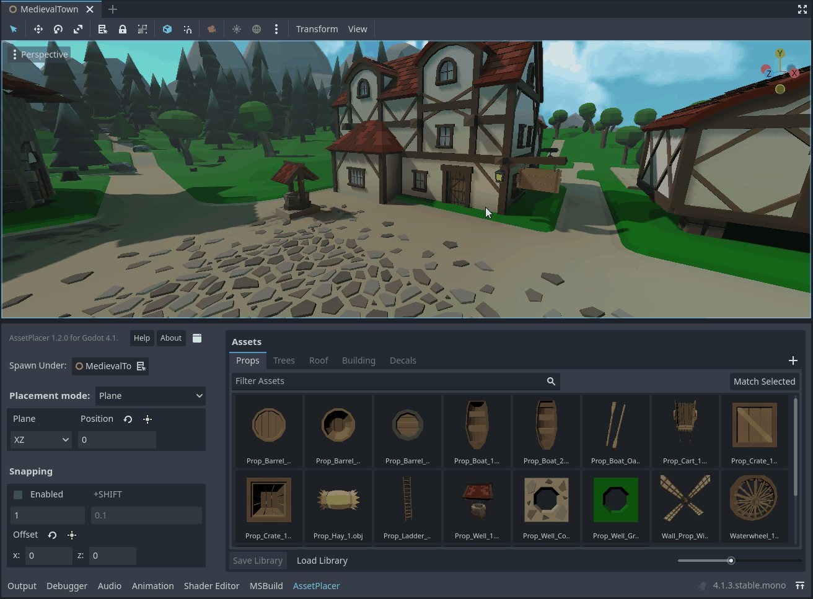
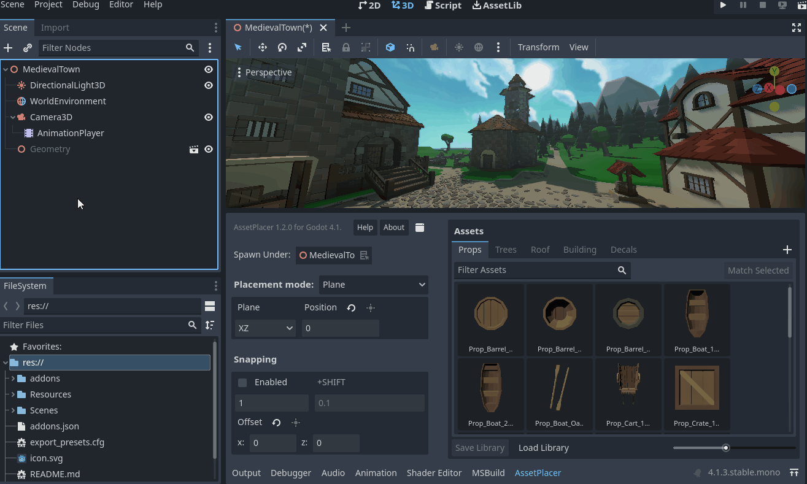
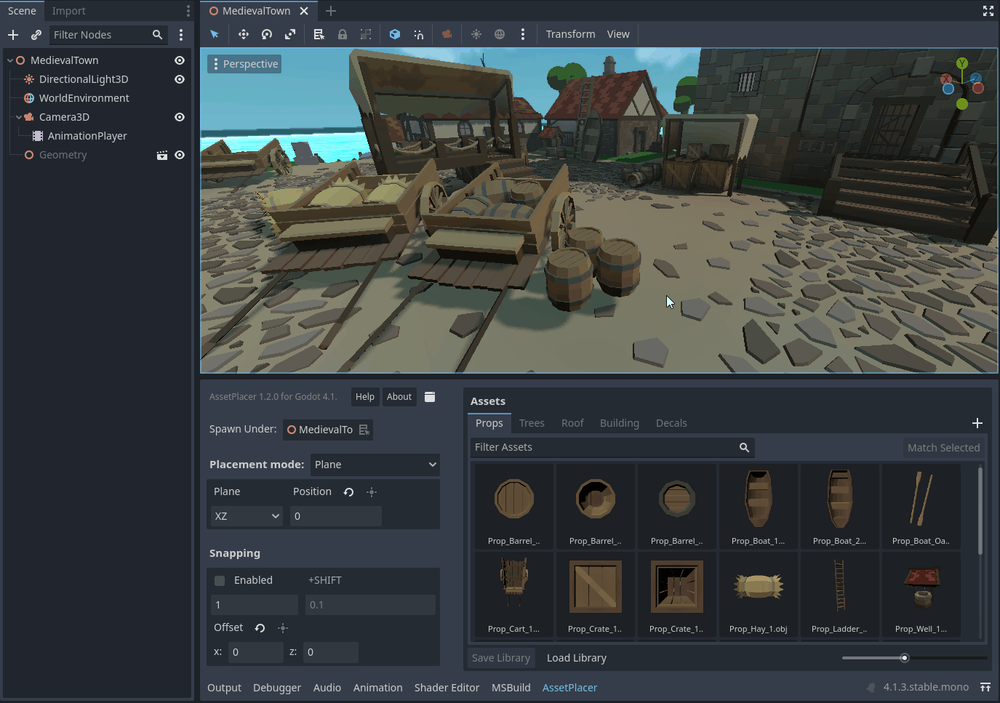

Placing Assets
The heart of this plugin is the feature to place assets in the 3D environment. Once you have added assets to a library, you can place instances of them in a 3D scne. To do so, click on an asset in the asset palette. It becomes highlighted and once you now hover the mouse over the 3D world, you should see a preview of your asset under the mouse cursor (to explore the capabilities of the plugin with the default settings, make sure you position the viewport camera above the origin, looking slightly downwards).
You can now click to place instances of your assets. They are being added to the scene tree under the selected spawn parent. You can change the spawn parent in the AssetPlacer UI, by dragging a node from the scene tree onto the “Spawn Under” field, or by selecting a node and then clicking the button next to “Spawn Under”.
You can keep placing more instances of your selected asset or select a different asset from the palette. If you want to stop placing assets, press Esc to deselect the asset. In case you then want to select the same asset again, you can press Space, to select the last asset again. If you want to place an asset and select it, to apply some transformations or modifications to the instance, you can use Alt+Click.
If you want to transform not just the current instance of the asset you are placing, but all instances you are placing, you can select the asset and press E to rotate or R to scale, while hovering over the viewport. You can apply the desired changes and then press Space to confirm. In case you want to cancel your changes, press Esc. Notice that transformations persist when you deselect and select your asset again. If you want to reset the transformation of your asset entirely, press Shift+E, or click the little reset button that will have appeared on the asset in the asset panel.
You can also apply some quick transformations by using shortcuts. With A, S, and D you can rotate your asset by 90 degrees on the X, Y, and Z axes.
Using the Shift modifier, the rotation step is halved to 45 degrees. You can change the amount of rotation when holding Shift in the Project Settings under AssetPlacer -> Settings.
You can also flip your asset by inverting scale components along the X, Y and Z axes by using the keys 1, 2, and 3.
Of course, the plugin would be very limited, if you could only place on the XZ plane. You can change the plane you are placing on, or place on physics surfaces instead. Refer to Placement Modes for more information.
Finally, you can also use snapping to place your assets at an exact position, regular distances, and in grid patterns. By clicking and dragging while snapping is enabled, you can paint assets in a line, and when snapping is disabled you can rotate the asset normal to the up vector of the plane you are placing on. Refer to Painting and Orienting Assets for details.